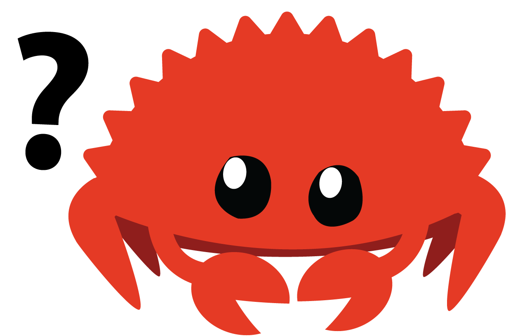

class: center, middle .title[How NLL make life easier] <br/> <br/> <br/> <br/> .center[] <br/> <br/> .author[Rnic / H.-S Zheng] <br/> <br/> <br/> .date[April 17, 2019] <br/> --- # About Me <br/> <br/> Rnic / 鄭弘昇 ‣ 交大資工碩0 ‣ Telegram: [{ t.me/@rnicinr }](t.me/@rnicinr) ‣ Github: [{ github.com/rniczh }](github.com/rniczh) --- # Outline * .highlight[**Lifetimes Concept**] * What is Lifetimes ? * Subtyping and variance * .highlight[**NLL**] * Phases of Borrow checker * Solving constraints --- class: center, middle # Lifetimes Concept .center[<img src="img/error.png" width="100%" alt="https://doc.rust-lang.org/book/ch10-03-lifetime-syntax.html">] --- # Borrow .center[] .footnote[(by. https://rufflewind.com/img/rust-move-copy-borrow.png)] -- <br/> .center[**How long does it borrow ?**] --- # Borrow ### Borrow → Reference --- Lifetime a .pink[borrow] will generate a .pink[reference], and a reference will tagged with a .pink[lifetime] -- ```rust let r; { let x = 5; r = &'b x; // -+-- 'b // | } // -+ println!("{}", r); // ``` -- ```rust let r; // lifetime must smaller than scope { let x = 5; r = &'b x; // -+-- 'b // X } // | println!("{}", r); // -+ Impossible, `x` alredy freed here ``` --- # Lifetimes ## .highlight[Set of points on CFG] .pull-left[ ```rust 'p: { A/1, B/0, B/3, B/4, C/0 } 'foo: { A/1, B/0, C/0 } 'bar: { B/3, B/4, C/0 } ``` ---- ```rust let mut foo: T = ...; let mut bar: T = ...; let p: &'p T; p = &'foo foo; if condition { print(*p); p = &'bar bar; } print(*p); ``` ] .pull-right[ .center[<img src="img/cfg.png" width="80%">] ] --- # Lifetimes ## Original Limits ```rust let mut s = "hello".to_string(); let mut c = || s += " world"; // captures by &mut and c become FnMut c(); println!("{}", s); ``` ``` | let mut c = || s += " world"; | -- - previous borrow occurs due to use of `s` in closure | | | mutable borrow occurs here | c(); | println!("{}", s); | ^ immutable borrow occurs here | } | - mutable borrow ends here ``` --- # Subtyping `'a : 'b` : lifetimes of `'a` is larger than `'b` ```rust +--------+ let p: &'p T; | | 'foo +----+ Borrow +----> 'p p = &'foo foo; | | +--------+ -------------- 'foo : 'p ``` -- ---- ## Location-aware subtyping `'a : 'b @ P` : `'a` must include all points in `'b` .pink[**that are reachable from location `P`**] --- # Variance .pull-left[ ``` +---+---+---+---+ | X | 0 | + | - | +---------------+ | 0 | 0 | 0 | 0 | +---------------+ | + | 0 | + | - | +---------------+ | - | 0 | - | + | +---+---+---+---+ ``` ] .pull-right[ ``` +---+---+---+---+ | ^ | 0 | + | - | +---------------+ | 0 | 0 | 0 | 0 | +---------------+ | + | 0 | + | 0 | +---------------+ | - | 0 | 0 | - | +---+---+---+---+ ``` ] .footnote[(by. https://medium.com/@kennytm/variance-in-rust-964134dd5b3e)] --- .left-column[ # Limits ] .right-column[ .pull-left[<img src="img/compile_flow.png" width="100%">] .pull-right[ `HIR → AST` `MIR → CFG`]] --- .left-column[ # Limits ] .right-column[ .pull-left[<img src="img/compile_flow.png" width="100%">] .pull-right[ `HIR → AST` `MIR → CFG`] .center[.pink[NLL : MIR-based borrowck]] ] --- .left-column[ # Limits ## Problem1 ] .right-column[ ```rust let mut s = "hello".to_string(); let mut c = || s += " world"; c(); println!("{}", s); ``` ``` | let mut c = || s += " world"; | -- - previous borrow occurs due to use of `s` in closure | | | mutable borrow occurs here | c(); | println!("{}", s); | ^ immutable borrow occurs here | } | - mutable borrow ends here ``` ] --- .left-column[ # Limits ## Problem1 ] .right-column[ ```rust let mut s = "hello".to_string(); let mut c = || s += " world"; c(); println!("{}", s); ``` ```rust 'a: { let mut s = "hello".to_string(); 'b: { let c = || s += " world"; // &mut 'c: { c(); printlnt("{}", s); // & } } } ``` 1. `'b` : 可變借用 2. `'c` : 不可變借用 3. `'c` is within `b` ---- → 不可變借用與可變借用同時發生 ] --- .left-column[ # Limits ## Problem1 ] .right-column[ ```rust let mut s = "hello".to_string(); let mut c = || s += " world"; c(); println!("{}", s); ``` .highlight[**解決辦法：**] ```rust let mut s = "hello".to_string(); { let mut c = || s += " world"; c(); } println!("{}", s); ``` ] --- .left-column[ # Limits ## Problem1 ## Problem2 ] .right-column[ ```rust fn process_or_default(map: &mut HashMap<usize, String>, key: usize) { match map.get_mut(&key) { Some(value) => { process(value); return; } None => { map.insert(key, V::default()); } } } ``` ``` | match map.get_mut(&key) { | --- first mutable borrow occurs here ... | map.insert(key, V::default()); | ^^^ second mutable borrow occurs here | } | } | - first borrow ends here ``` ] --- .left-column[ # Limits ## Problem1 ## Problem2 ] .right-column[ ```rust fn process_or_default(map: &mut HashMap<usize, String>, key: usize) { match map.get_mut(&key) { Some(value) => { process(value); return; } None => { map.insert(key, V::default()); } } } ``` .highlight[**解決辦法：**] ```rust match map.get_mut(&key) { Some(value) => { process(value); return; } None => { } } map.insert(key, V::default()); ``` ] --- ---